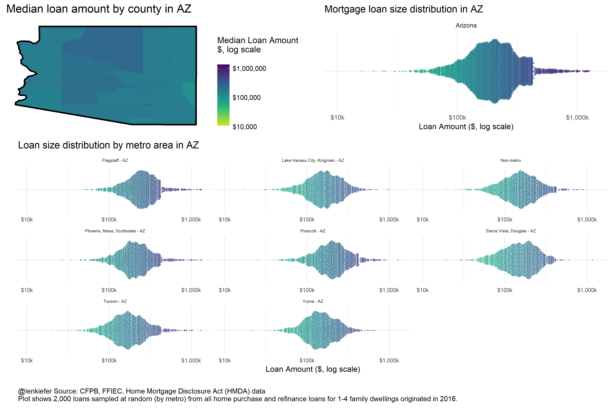

I AM HEADED OUT TO ARIZONA to talk with mortgage professionals. I wanted to share some charts I’ve put together for the Arizona and Phoenix metro economy. These charts were put together using R and tidyquant as I described here.
I am working on applying tidy data principles to constructing presentation slides, something I’m calling “tidy PowerPoint”. Preparing these charts, or ones like them, would fall under that workflow. Hopefully I’ll be able to tell you about them more later. Perhaps I can work on the plane and hammer out some details.
But here are some charts.


Arizona mortgage loan size distribution
